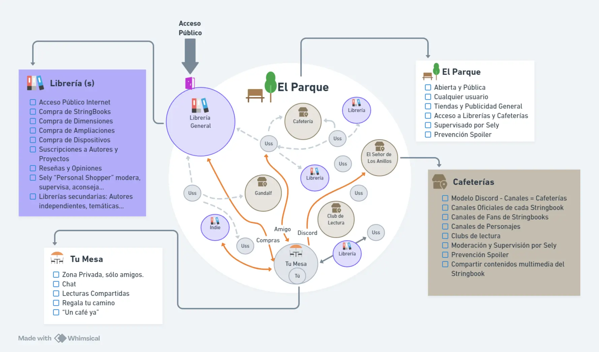

El Producto / La Comunidad
🏘️ La Comunidad: La Red Social del Selbook
Una Red Social supervisada por la IA
Hay pocas cosas que superen el placer de compartir y charlar sobre una Historia con otras personas que ya la han vivido. Podemos llamarla Novela, Película, Serie o Anécdota. Compartir, recordar y rememorar esas situaciones genera un grado de “hermanamiento” y “disfrute” que el Selbook tiene que recoger y fomentar. De ahí surge la red social propia del Selbook, que hemos llamado “La – Comunidad”.
Pero también es cierto que pocas cosas generan mayor enfado o malestar que el Spoiler. Por eso era preciso que La – Comunidad tuviera varios "estamentos" o Niveles de privacidad.
Siguiendo en esta línea, una acción muy habitual entre las personas es el intercambio de ideas y de recomendaciones, ya sean de Novelas, películas, etc. El Selbook, a través de La Comunidad, quiere dar cabida a estos niveles por diferentes motivos:
📈
Mejora de la Experiencia de Usuario
📢
Promoción y acciones comerciales
📝
Gestión de Reseñas
Pero en definitiva, el objetivo es que el Usuario encuentre “Su sitio”, un espacio de privacidad "elegible", donde interactúe con los demás usuarios y potencie el disfrute de su experiencia.
Estos niveles de Privacidad estarán supervisados, cómo no, por la IA, por Sely, y regulada por las 8 Leyes de Sely. Describamos estos niveles y la acción de la IA en cada uno de ellos.
Diagrama de La Comunidad:
